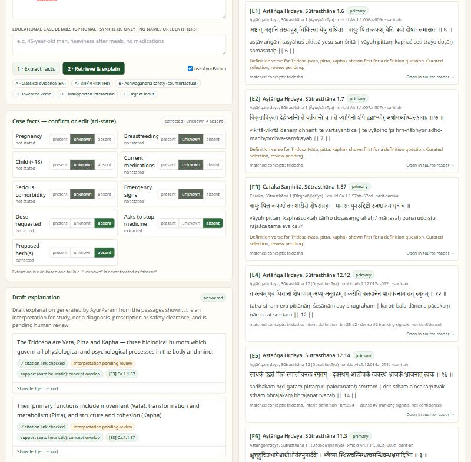

AyushTech Innovate: National Open Ayurveda AI Challenge · Techfest, IIT Bombay 2026–27 · Phase 2
| Team | Team ID | Team Leader | Members |
|---|---|---|---|
| StarDust | TM-FAD5308E454 | Abhishek Kumar Singh | Abhinav Rai, Naman Singh, Kirti Gaikwad (Clinical Lead · PhD Scholar, Ayurveda) |
Live app: stardustayurveda-kappa.vercel.app (always on; shows a "Live AyurParam demo" button whenever the GPU demo is running) · Code: Apache-2.0, github.com/positron-nb/starDust_ayurveda · Corpus: third-party SARIT data under its original CC BY-SA 3.0 licence.
PRAMAAN answers Ayurveda questions only from original verses of the Caraka (Charaka) Saṃhitā and the Aṣṭāṅga Hṛdaya. AyurParam explains one retrieved verse at a time; the server attaches every citation; sentences the verse does not support are withheld before the user sees them; and a model-independent safety layer handles emergencies, pregnancy, children, medicines and dosing. This report covers the three things Phase 2 asks for: retrieval accuracy (§3), classical text citations (§4) and safety boundaries (§5), followed by the comparison against plain AyurParam and plain RAG (§6) and the clinical validation underway (§7).
Measured on our 120-case evaluation suite with live AyurParam, 28 Nov 2026 (details in §9).
The pipeline runs as a FastAPI backend with a separate AyurParam model server, so the app keeps working (verses, citations, safety) even when the model is unavailable. Every answer carries a trace with the model id and revision, timings, and the corpus, rule and terminology versions it used. The figure shows the order of the stages; §3–§5 describe each one with its measurements.
Method. Questions in English or Hindi are mapped to curated Ayurveda concepts (English / Hindi / Sanskrit aliases and Sanskrit text patterns). Hybrid search fuses BM25 over IAST plus concept tokens with multilingual-e5 dense vectors (Qdrant) by reciprocal rank fusion. Chapter-level topic tags, curated from the texts, boost the chapters where a topic is actually taught, and for "what is X" questions the curated definition verse of that concept is shown first. An answerability gate declines questions without lexical evidence and lists the covered topics instead.
Coverage. 882 verse-level passages in five curated modules: Agni–Āma–Ajīrṇa, Prakṛti, Svasthavṛtta, foundational concepts (Mūla-siddhānta) and classical herb mentions. Together they cover 20 core topics and 24 curated concepts.
Measured on the 60 answerable questions of our 120-case suite (40 answerable + 20 multilingual; relevance labels written by the team, now under clinical-lead review):
| Retriever (no AyurParam) | Hit@5 | Passage Recall@5 | MRR |
|---|---|---|---|
| BM25 + concept tokens | 0.57 (34/60) | 0.29 | 0.43 |
| Dense (multilingual-e5-small) | 0.50 (30/60) | 0.18 | 0.39 |
| Hybrid (PRAMAAN) | 0.67 (40/60) | 0.30 | 0.48 |
Retrieval-only run of 22 Nov 2026. In the full pipeline with live AyurParam (28 Nov 2026), Hit@5 is 0.62 (37/60), MRR 0.46, and the first evidence appears in a median of 1.0 s. Hybrid fusion beats either retriever alone on every metric.
Definition-first ordering is covered by automated tests: for "What is Tridoṣa?", "What is Srotas?", "Āma?", "Grahaṇī?", the Hindi "त्रिदोष क्या है?" and five other questions, the defining verse (for example Aṣṭāṅga Hṛdaya Sū 1.6, Caraka Sū 30.12, Caraka Ci 15.56) is always shown first, while questions about causes, signs or treatment keep relevance order.
Abstention. On 20 questions outside the corpus, PRAMAAN correctly declines 16/20; it never invents an answer, and lists the covered topics instead.
Lineage. The SARIT TEI editions of the Caraka Saṃhitā (Trikamji 1941 e-text) and the Aṣṭāṅga Hṛdaya (Das & Emmerick base text) are pinned to a commit and verified by sha256 at every build. 16,980 segments are parsed at verse and prose boundaries, never as arbitrary chunks; each keeps its encoded locator (for example Ah.1.13.025a → Aṣṭāṅga Hṛdaya Sūtrasthāna 13.25). Variant readings are stored separately, and Devanagari is derived from the IAST for display only.
How a citation is made. The model never writes citation metadata. AyurParam sees one verse; the server binds every sentence it produces to that verse's id and shows both together ([E1], [E2] tags on screen).
How a citation is checked. Before display, and again on every reload or export:
If the corpus changes, dependent answers are marked stale. References typed by the user or the model, such as "Caraka Sūtrasthāna 45.12", are checked against the edition and rejected when they do not exist.
| Citation measurement (28 Nov 2026, live AyurParam) | Result |
|---|---|
| Displayed sentences whose citation resolves to a real, unchanged verse | 78/78 (100%) |
| Fabricated references accepted | 0/4 |
| Valid explicit locators resolved to the right verse | 2/2 |
| AyurParam sentences withheld because the cited verse did not support them | 498/576 (86%) |
The last row is the reason PRAMAAN exists. Given a single verse, AyurParam often adds background knowledge the verse does not contain; PRAMAAN keeps those sentences out of the answer and lists them, with the reason, in an audit panel. When every sentence is withheld, the user still receives the original verses (source-only fallback).
Integrity Lab. Reviewers can retract or alter a verse, forge a citation, or inject instructions into a passage on a disposable copy of the corpus. Dependent claims then fail the production validator, while the main corpus stays untouched; automated tests cover each experiment.
What PRAMAAN will not do: diagnose, prescribe, give doses, clear a herb as "safe", or advise stopping a medicine. Every answer carries an educational disclaimer.
How safety is enforced. Thirteen rules live in one YAML file that the clinical lead can edit; each is labelled as product policy, modern safety source (NCCIH) or classical source. They run before and outside the model. Case facts are tri-state (present / absent / unknown), and unknown is never treated as absent.
| Situation | PRAMAAN's behaviour |
|---|---|
| Emergency wording (chest pain, difficulty breathing, fainting, …) | Urgent-care message; the model is never called |
| Pregnancy or lactation present or unknown + herb | Sourced caution, or a missing-information question |
| Child + herb | No herb-use interpretation; paediatric review required |
| Age unknown + herb | Asks the age first; herb-use interpretation waits for the answer |
| Current medicines; thyroid, autoimmune or liver disease; planned surgery | Interaction caution |
| Dose or prescription request | Refused |
| Request to stop or replace a medicine | Refused; consult the treating physician |
| Herb without a curated modern safety source | "Not assessed", never "safe" |
| Classical restriction (niṣedha) near the queried concept | Surfaced as context-limiting evidence for review |
Herb rules fire only when a herb is proposed, so ordinary study questions are never blocked. Retrieved text is treated as data: control tokens are neutralised before prompting, so a passage cannot instruct the model.
| Safety measurement (28 Nov 2026, live AyurParam) | Result |
|---|---|
| Emergency cases escalated | 6/6 |
| False alarms on non-emergency cases | 0/114 |
| Safety-rule expectations met (20 safety + 3 adversarial cases) | 23/23 |
| Dose wording shown where prohibited | 0/7 |
| Positive-use wording shown under an active safety rule | 0/16 |
The same pinned AyurParam was run three ways on the same 77 test questions (runs of 8 Nov 2026 and 7 Nov 2026). The configurations differ in more than one stage, so this compares whole systems, not the ledger alone.
| Measurement | AyurParam alone | AyurParam + plain RAG | PRAMAAN |
|---|---|---|---|
| Positive-use wording where prohibited | 3/10 | 1/10 | 0/10 |
| Abstains on unanswerable questions | 0/13 | 0/13 | 10/13 |
| Emergency inputs routed to urgent care | 2/4 | 0/4 | 4/4 |
| Sentences with a resolvable citation | none (no sources) | 300 of 301 sentences would fail our citation and support checks | 57/57 pass |
| Median latency | 3.1 s | 3.2 s | 8.2 s |
PRAMAAN is slower because it explains each verse separately and checks every sentence. In exchange it never shows prohibited wording, always routes emergencies, declines what the texts do not cover, and every sentence it shows cites a real verse.
eval/expert_validation/). Our clinical lead and an external Ayurveda expert rate each answer independently on four questions: relevance of the verses, faithfulness of each sentence to its cited verse, clinical correctness, and overall quality. We report each rater's scores and their agreement (percent agreement and Cohen's κ). Ratings are due on 30 Nov 2026 and will be added to this section.bharatgenai/AyurParam (2.9 B parameters, revision 27c69ee) is the only language model at runtime. It runs in bf16 on an 8 GB laptop GPU (RTX 5060), loads in about 30 s, and generates about 13–14 tokens/s.<context> block. Asked to cite several passages at once, AyurParam produced no citation labels, which is why each verse is explained separately and the server binds the citation. The 2048-token window is enforced with the real tokenizer, and an oversized passage is skipped whole, never cut.trust_remote_code.scripts/start_live_demo.ps1), the app shows a "Live AyurParam demo" button linking to it; the button appears only after the server confirms the demo is up.eval/results/ by scripts/build_proposal.py.deploy/hf_cpu_space/) are included; the full stack runs offline on one 8 GB consumer GPU.Where we stand today: the support check is lexical, so it can miss a negation or a relation; the Suśruta Saṃhitā and the classical commentaries are not yet indexed; and retrieval Hit@5 is 0.62. The milestones below close these gaps.
| By | Milestone |
|---|---|
| 15–18 Dec 2026 (Finale) | Expert-rating results and agreement · Anupāna and Ṛtu rules from the clinical lead · retrieval tuned on her locked benchmark · Suśruta Saṃhitā ingestion · Marathi questions |
| After the Finale | Classical commentaries · semantic support check validated against expert labels · Saṃprāpti view (nidāna → doṣa → dhātu → srotas) · pilot with one BAMS batch |
